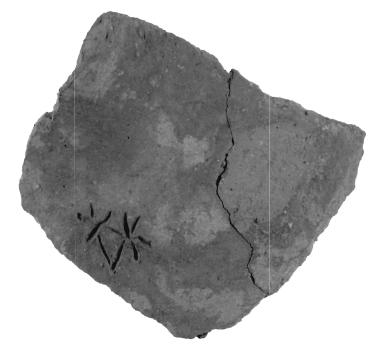
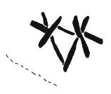

Owens 1993c sees the four mason marks on the Royal Tomb (Evans, Prehistoric Tombs of Knossos , 1906, fig. 146) as an inscription, KN Ze 45, KA-SI-A-TE, and, following Boskamp 1990, the perplexing drawing on a (ProtoPalatial?) stone block at the NW corner of the KN palace (PM I fig. 98) as another inscription, KN Ze 44, I-•-WA-JA. The former is lost, but Hood ("Mason's Marks in the Palaces" in The Function of the Minoan Palaces , R. Hägg & N. Marinatos eds., 205-212, esp. 209) took the marks as mason marks (JGY agrees); the latter is still to be seen on site and, to JGY, if it must be interpreted as anything, it looks like an architectural plan.